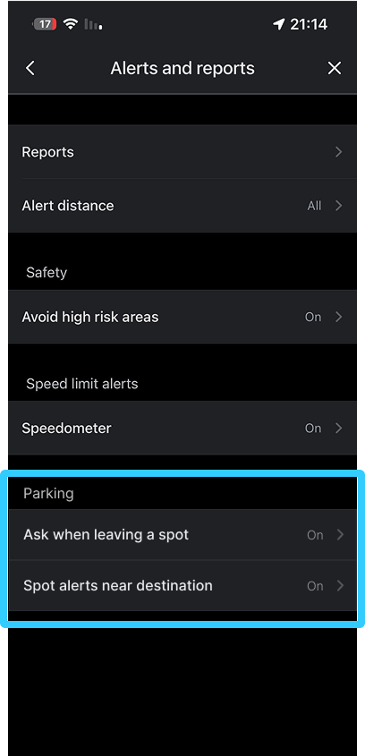

Self-Initiated Concept · Feature Design
Street
Parking
A concept feature design for crowdsourced street parking in Waze.

Overview
As someone without home parking, finding a spot is one of the most frustrating things I deal with daily - and I know I'm not alone. I wanted to use an existing platform to solve a problem that takes up real time for a lot of people.
The Problem
Finding parking takes too much of our time
Waze helps drivers reach their destination — but stops there. Street parking is left to chance. It's the last part of the drive, and the most frustrating.
Drivers spend that time circling, creating extra traffic and uncertainty — at the exact moment the drive should feel resolved.
Current Experience
What Waze does today - and what's missing
Waze added parking lot indicators near destinations. A step forward — but street parking is still not addressed.
- Shows nearby parking lots with availability
- Displays parking icons near destination
- Lets you navigate to paid parking
- No real-time signal when a street spot opens
- No distinction between lots and street spots
- Parking icons appear without clear context
- No actionable guidance for the last 500m
How Might We
How might we help drivers discover potential street parking near their destination using real-time signals - without interrupting the driving experience?
The Solution
Using Waze's signal model to surface available street parking
Testing
Testing the design language
Before designing anything, I studied how Waze's visual language works - the icons they use for traffic reports, hazards, and points of interest, and how those signals communicate meaning to drivers at a glance. From there, I explored several icon directions for the street parking feature, testing which visual cues felt native to Waze and which felt foreign or confusing.

What I chose

I chose the familiar parking icon Waze already uses - but in green to signal the spot is free and accessible. Parking lots remain in blue.
Feature Experience
How the feature works
The Parker

Leaving a parking spot
When a new drive starts, Waze shows a quick prompt to understand if the driver is leaving a parking spot.
The Driver
Approaching the destination

As the driver nears the destination, a suggestion appears for a nearby available spot.
Navigating to a free spot

If the driver confirms, the system navigates them to the available parking spot.
Additional interactions
Tapping a spot on the map

Tap any green icon on the map to navigate to that spot.
User controls the feature

The feature can be toggled on or off in settings.
Design Decisions
Why I made these decisions
No popups while driving
I placed all prompts at the bottom so drivers aren't interrupted.Green for street, blue for lots
I reused Waze's existing color system.Says "likely", not "available"
The spot might be taken - I designed the copy to reflect that.Takeaway
What I learned
Designing within an existing product's model is a real constraint. I had to study how Waze's signals, icons, and interactions work before touching anything. The concept works because it doesn't change the product — it extends it. Every driver who leaves a spot becomes a signal for the next one.
Back to Portfolio
← All ProjectsNext Project
Memore →